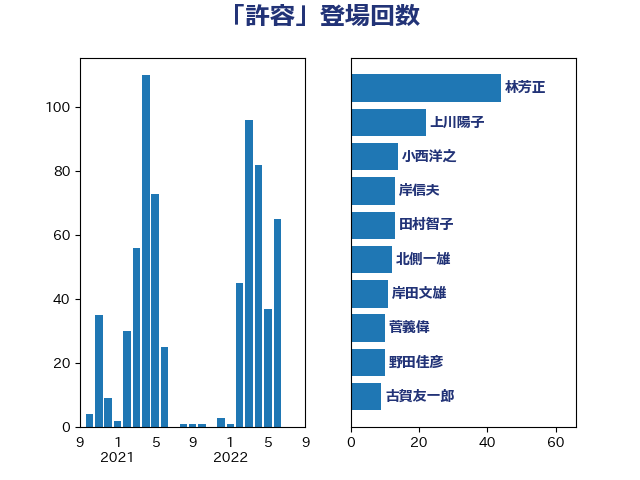

単語「許容」

| 林芳正 | 自由民主党 | 44 回 |
| 上川陽子 | 自由民主党 | 22 回 |
| 小西洋之 | 立憲民主党 | 14 回 |
| 岸信夫 | 自由民主党 | 13 回 |
| 田村智子 | 日本共産党 | 13 回 |
| 北側一雄 | 公明党 | 12 回 |
| 岸田文雄 | 自由民主党 | 11 回 |
| 菅義偉 | 自由民主党 | 10 回 |
| 野田佳彦 | 立憲民主党 | 10 回 |
| 古賀友一郎 | 自由民主党 | 9 回 |
| 後藤茂之 | 自由民主党 | 8 回 |
| 音喜多駿 | 日本維新の会 | 8 回 |
| 櫻井周 | 立憲民主党 | 7 回 |
| 茂木敏充 | 自由民主党 | 7 回 |
| 萩生田光一 | 自由民主党 | 7 回 |
| 古賀之士 | 立憲民主党 | 6 回 |
| 山添拓 | 日本共産党 | 6 回 |
| 中野洋昌 | 公明党 | 5 回 |
| 田村憲久 | 自由民主党 | 5 回 |
| 麻生太郎 | 自由民主党 | 5 回 |
| 中西健治 | 自由民主党 | 4 回 |
| 國重徹 | 公明党 | 4 回 |
| 小田原潔 | 自由民主党 | 4 回 |
| 浅野哲 | 国民民主党 | 4 回 |
| 穀田恵二 | 日本共産党 | 4 回 |
| 井上哲士 | 日本共産党 | 3 回 |
| 勝部賢志 | 立憲民主党 | 3 回 |
| 安江伸夫 | 公明党 | 3 回 |
| 宮本徹 | 日本共産党 | 3 回 |
| 川田龍平 | 立憲民主党 | 3 回 |
| 斉藤鉄夫 | 公明党 | 3 回 |
| 松野博一 | 自由民主党 | 3 回 |
| 柳ヶ瀬裕文 | 日本維新の会 | 3 回 |
| 田所嘉徳 | 自由民主党 | 3 回 |
| 舞立昇治 | 自由民主党 | 3 回 |
| 西田昌司 | 自由民主党 | 3 回 |
| 伊波洋一 | 無所属 | 2 回 |
| 伊藤岳 | 日本共産党 | 2 回 |
| 古川禎久 | 自由民主党 | 2 回 |
| 吉田統彦 | 立憲民主党 | 2 回 |
| 塩川鉄也 | 日本共産党 | 2 回 |
| 大西健介 | 立憲民主党 | 2 回 |
| 奥野総一郎 | 立憲民主党 | 2 回 |
| 宮口治子 | 立憲民主党 | 2 回 |
| 小宮山泰子 | 立憲民主党 | 2 回 |
| 尾崎正直 | 自由民主党 | 2 回 |
| 岡本あき子 | 立憲民主党 | 2 回 |
| 平木大作 | 公明党 | 2 回 |
| 後藤祐一 | 立憲民主党 | 2 回 |
| 本庄知史 | 立憲民主党 | 2 回 |
| 松原仁 | 立憲民主党 | 2 回 |
| 森屋隆 | 立憲民主党 | 2 回 |
| 河野太郎 | 自由民主党 | 2 回 |
| 津島淳 | 自由民主党 | 2 回 |
| 浅田均 | 日本維新の会 | 2 回 |
| 田村貴昭 | 日本共産党 | 2 回 |
| 笠井亮 | 日本共産党 | 2 回 |
| 緑川貴士 | 立憲民主党 | 2 回 |
| 芳賀道也 | 国民民主党 | 2 回 |
| 藤田文武 | 日本維新の会 | 2 回 |
| 西村康稔 | 自由民主党 | 2 回 |
| 西村智奈美 | 立憲民主党 | 2 回 |
| 赤嶺政賢 | 日本共産党 | 2 回 |
| 足立康史 | 日本維新の会 | 2 回 |
| 鈴木俊一 | 自由民主党 | 2 回 |
| 鈴木貴子 | 自由民主党 | 2 回 |
| 長妻昭 | 立憲民主党 | 2 回 |
| 階猛 | 立憲民主党 | 2 回 |
| ながえ孝子 | 無所属 | 1 回 |
| 三宅伸吾 | 自由民主党 | 1 回 |
| 上杉謙太郎 | 自由民主党 | 1 回 |
| 井上信治 | 自由民主党 | 1 回 |
| 井出庸生 | 自由民主党 | 1 回 |
| 伊藤孝恵 | 国民民主党 | 1 回 |
| 伊藤孝江 | 公明党 | 1 回 |
| 加藤勝信 | 自由民主党 | 1 回 |
| 吉川元 | 立憲民主党 | 1 回 |
| 吉田宣弘 | 公明党 | 1 回 |
| 和田義明 | 自由民主党 | 1 回 |
| 塩村あやか | 立憲民主党 | 1 回 |
| 大島敦 | 立憲民主党 | 1 回 |
| 守島正 | 日本維新の会 | 1 回 |
| 寺田静 | 無所属 | 1 回 |
| 小林鷹之 | 自由民主党 | 1 回 |
| 小沢雅仁 | 立憲民主党 | 1 回 |
| 小沼巧 | 立憲民主党 | 1 回 |
| 小熊慎司 | 立憲民主党 | 1 回 |
| 尾身朝子 | 自由民主党 | 1 回 |
| 山下芳生 | 日本共産党 | 1 回 |
| 山岡達丸 | 立憲民主党 | 1 回 |
| 山崎誠 | 立憲民主党 | 1 回 |
| 山本剛正 | 日本維新の会 | 1 回 |
| 山田賢司 | 自由民主党 | 1 回 |
| 岡本三成 | 公明党 | 1 回 |
| 岡田克也 | 立憲民主党 | 1 回 |
| 平山佐知子 | 無所属 | 1 回 |
| 平沼正二郎 | 自由民主党 | 1 回 |
| 打越さく良 | 立憲民主党 | 1 回 |
| 新藤義孝 | 自由民主党 | 1 回 |
| 日下正喜 | 公明党 | 1 回 |
| 本村伸子 | 日本共産党 | 1 回 |
| 本田顕子 | 自由民主党 | 1 回 |
| 東徹 | 日本維新の会 | 1 回 |
| 松川るい | 自由民主党 | 1 回 |
| 松沢成文 | 日本維新の会 | 1 回 |
| 梅村聡 | 日本維新の会 | 1 回 |
| 梶山弘志 | 自由民主党 | 1 回 |
| 森山浩行 | 立憲民主党 | 1 回 |
| 森田俊和 | 立憲民主党 | 1 回 |
| 橋本岳 | 自由民主党 | 1 回 |
| 沢田良 | 日本維新の会 | 1 回 |
| 泉健太 | 立憲民主党 | 1 回 |
| 浜地雅一 | 公明党 | 1 回 |
| 浜野喜史 | 国民民主党 | 1 回 |
| 海江田万里 | 立憲民主党 | 1 回 |
| 田島麻衣子 | 立憲民主党 | 1 回 |
| 矢倉克夫 | 公明党 | 1 回 |
| 石垣のりこ | 立憲民主党 | 1 回 |
| 礒崎哲史 | 国民民主党 | 1 回 |
| 福島みずほ | 社会民主党 | 1 回 |
| 秋本真利 | 自由民主党 | 1 回 |
| 稲富修二 | 立憲民主党 | 1 回 |
| 細田健一 | 自由民主党 | 1 回 |
| 細野豪志 | 自由民主党 | 1 回 |
| 緒方林太郎 | 無所属 | 1 回 |
| 美延映夫 | 日本維新の会 | 1 回 |
| 羽田次郎 | 立憲民主党 | 1 回 |
| 船田元 | 自由民主党 | 1 回 |
| 藤岡隆雄 | 立憲民主党 | 1 回 |
| 西田実仁 | 公明党 | 1 回 |
| 赤池誠章 | 自由民主党 | 1 回 |
| 赤羽一嘉 | 公明党 | 1 回 |
| 逢坂誠二 | 立憲民主党 | 1 回 |
| 逢沢一郎 | 自由民主党 | 1 回 |
| 野田聖子 | 自由民主党 | 1 回 |
| 鈴木義弘 | 国民民主党 | 1 回 |
| 青柳陽一郎 | 立憲民主党 | 1 回 |
| 馬場伸幸 | 日本維新の会 | 1 回 |
| 高木かおり | 日本維新の会 | 1 回 |
| 鳩山二郎 | 自由民主党 | 1 回 |
| 鷲尾英一郎 | 自由民主党 | 1 回 |